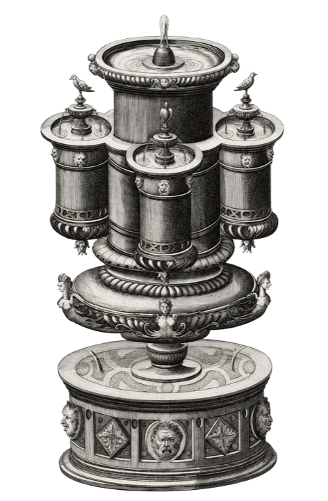

Halyx
A handmade computer in a briefcase, where the odds and ends have promoted themselves to software.
I build little worlds
and take them places.

A handmade computer in a briefcase, where the odds and ends have promoted themselves to software.
An e-ink newspaper tucked into my everyday planner.

Mickey ears that sync with Disneyland’s show lighting over Bluetooth.